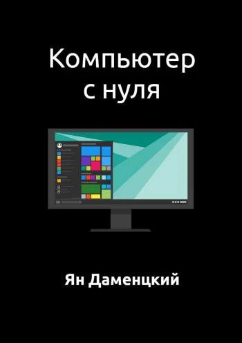

nine1z
Главная
Книги
Статьи
Видео
Курсы
ПО
Книги

Компьютер с нуля
Ян Даменцкий
Купить
Ozon (электронная версия)
Litres (электронная версия)
Ridero (электронная версия)
Amazon (электронная версия)
Данная книга позволит освоить вам один из самых важных в настоящее время навыков — использование компьютера. Она не сделает из вас эксперта, однако поможет вам научиться выполнять самые важные действия с компьютером под Microsoft Windows 10 с полного нуля. Это совсем несложно и, прочитав эту книгу, вы сможете в этом убедиться.
2020, 6+